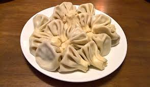

დღეს მოგცემთ რჩევას თუ როგორ უნდა მოვამზადოთ ხინკალი
საჭირო ინგრედიენტები:
ხინკლის მთავარი ინგრედიენტი ცომია, რომელიც შეიძლება ხორბლის ფქვილის, წყლის, მარილისა და გამაფხვიერებლისგან დამზადდეს. შიგთავსი ჩვეულებრივ შედგება დაქუცმაცებული ხორცისგან (საქონლის ან ღორის) შერეული სანელებლებით, როგორიცაა ქინძი, ცილი და შავი პილპილი და კუბებად დაჭრილი ხახვი. ვეგეტარიანული ვერსიისთვის ხორცის ნაცვლად სოკო შეიძლება გამოვიყენოთ.
მომზადების წესი:
ხინკლის მომზადებას ცოტა მოთმინება სჭირდება, მაგრამ შედეგი ღირს! დაიწყეთ ცომის ყველა ინგრედიენტის შერევით, სანამ არ მიიღებთ რბილ, მაგრამ ელასტიურ კონსისტენციას. შემდეგ დატოვეთ ისინი, სანამ შიგთავსის მომზადებას ამზადებთ - აურიეთ თქვენს მიერ არჩეული ინგრედიენტები, სანამ მთლიანად არ ერთობიან.
როგორც კი ორივე კომპონენტი მზად იქნება, დროა დავიწყოთ გადახვევა! აიღეთ მცირე რაოდენობით ცომი და გააბრტყელეთ თხელ დისკებად, შემდეგ დაამატეთ შუაში შიგთავსი (დაახლოებით 1 ჩაის კოვზი თითო დისკზე). ნაზად შეაგროვეთ თითოეული დისკის კიდეები ისე, რომ მათ ერთ ბოლოში ჩამოაყალიბონ ნაკეცები — ეს მისცემს თქვენს ხინკალს მისთვის დამახასიათებელ ფორმას — სანამ ზედმეტ ცომს მეორე ბოლოში გადაატრიალებთ ისე, რომ თითოეული პურზა საიმედოდ დაიხუროს.
ბოლოს მოხარშეთ ხინკალი ან გაზქურაზე ადუღებულ წყალში ან ოდნავ ცხიმწასმულ საცხობ ფირფიტაზე წინასწარ გახურებულ ღუმელში (ჩვეულებრივ, დაახლოებით 375F). პელმენების ზომიდან გამომდინარე, მათ 8-დან 15 წუთამდე დასჭირდებათ სათანადოდ მოხარშვა — ისინი მზად არიან, როცა კანი ოქროსფერი გახდება! მიირთვით ისინი დაუყოვნებლივ არაჟნით ან თქვენი არჩევანის იოგურტით — კარგი მადა!!